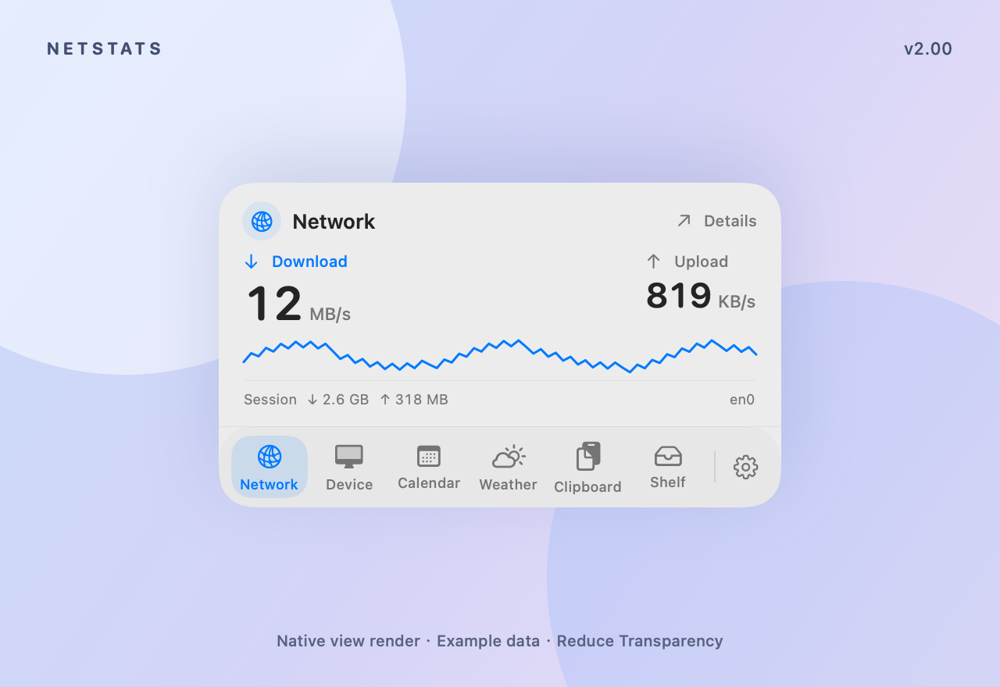
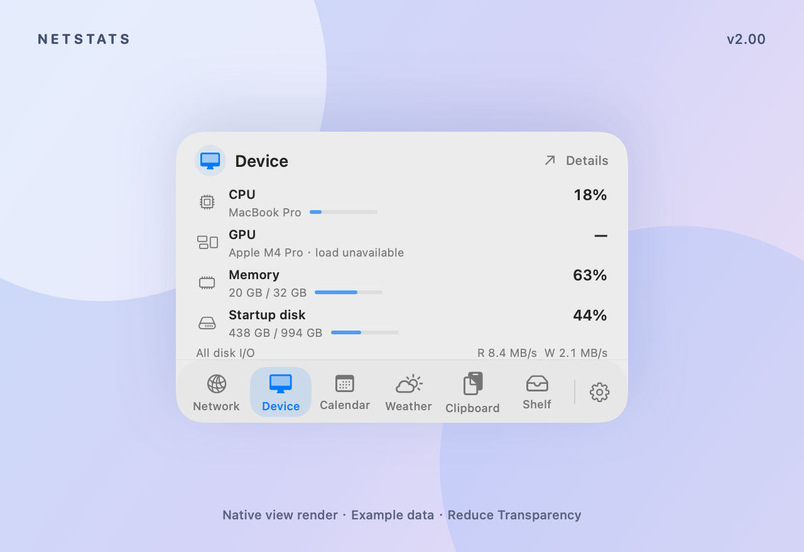
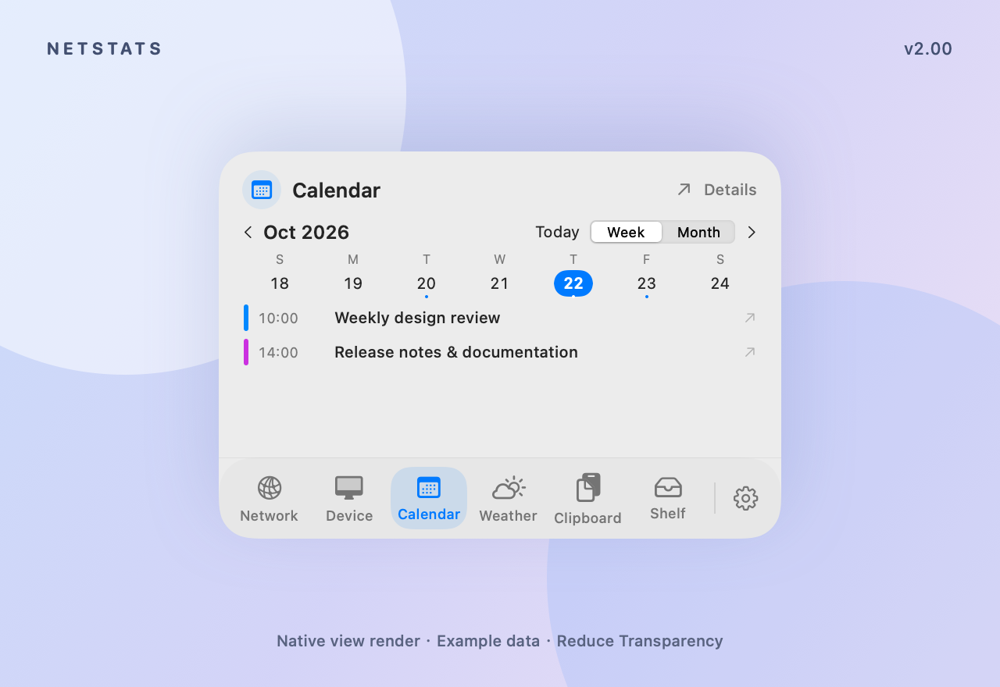
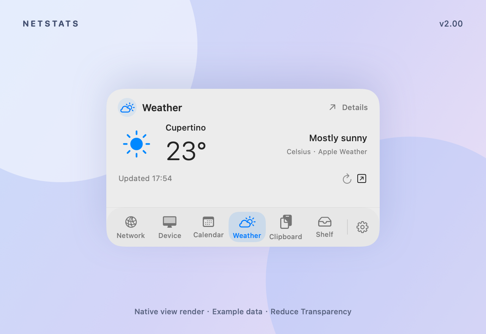
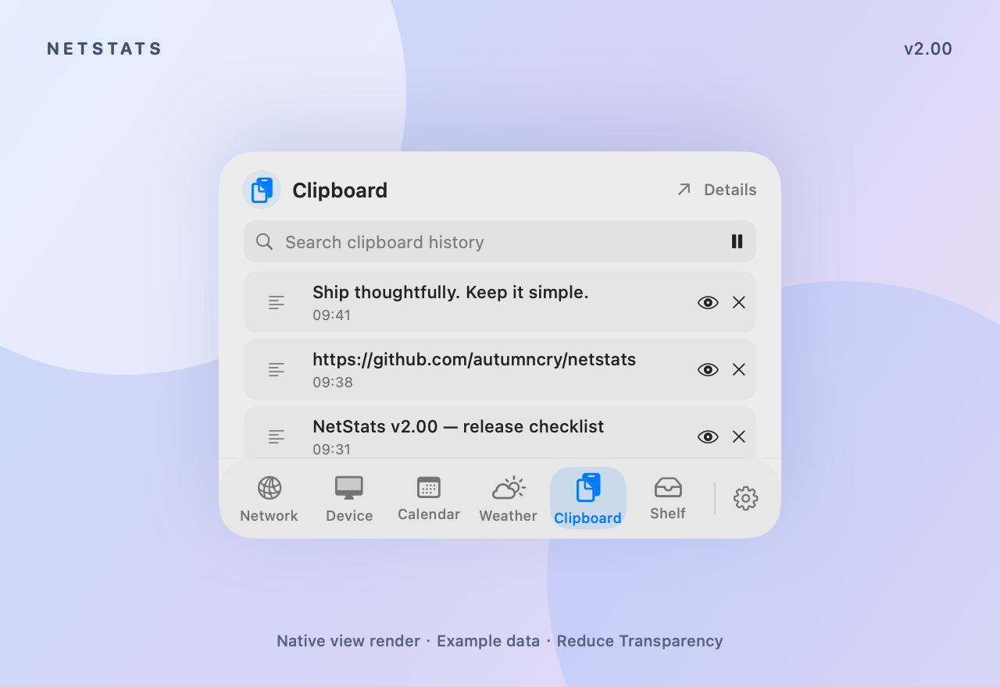
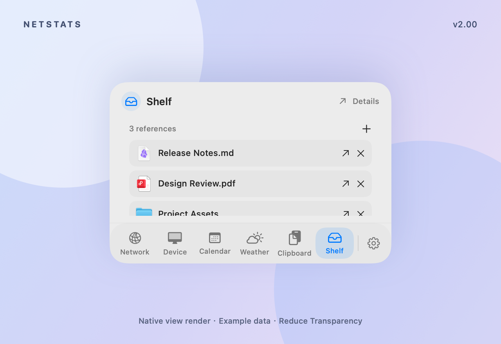
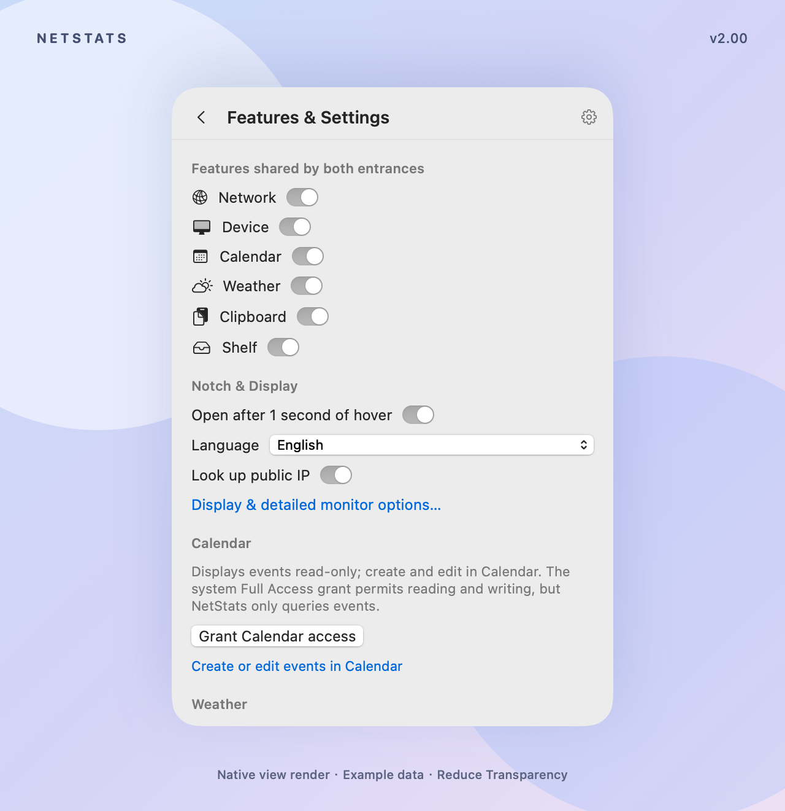

网络
实时流量，分清主次。
下载为主、上传为辅。短趋势、活动接口和会话流量一起呈现，复用现有系统采样。
- 实时上下行速率
- 轻量下载趋势与会话流量
- 从“详情”查看 IP 与代理信息
初始启用，无需额外授权。
功能与设置说明v2.00 · 原生 macOS 功能中心
网络、设备、日历、天气、剪切板与文件暂存。点击菜单栏，或在实体刘海悬停 1 秒，让常用信息随手可见。

按需切换
一次查看一项，在底部 Dock 点击切换。菜单栏与刘海共用数据、开关和设置。
网络
下载为主、上传为辅。短趋势、活动接口和会话流量一起呈现，复用现有系统采样。
初始启用，无需额外授权。
功能与设置说明设备
CPU、GPU、内存和启动盘，用紧凑的行展示层级。可用数据如实呈现。
GPU 负载不是所有设备都可读取，不可用时显示“—”。
功能与设置说明
日历
按周或月浏览，选择日期查看日程；创建与编辑转到系统 Calendar。
默认关闭；需主动授予系统 Full Access，产品只查询日程。
功能与设置说明
天气
地点、摄氏温度、天气状况和更新时间。连接成功后缓存刷新，失败时保留上次结果。
默认关闭；需配置快捷指令并测试连接。v2.00 展示当前天气，不含预报。
功能与设置说明
剪切板
搜索、预览，点击复制回剪切板。保存数量和保留期限由你决定。
默认关闭；新版 macOS 允许后台读取后才记录。不会自动向其他应用粘贴。
功能与设置说明
暂存架
把文件和文件夹暂放在卡片里，继续拖往别处。重启后仍可恢复引用。
初始启用。有效文件在刘海停留 500 毫秒展开，松手才添加。
功能与设置说明
以下为 v2.00 同版 SwiftUI 组件渲染，使用示例数据与英文界面，全部功能已启用，并开启系统“减少透明度”。不是实时桌面截图；默认只启用网络、设备和暂存架。
两个入口
同一张卡片，按你的 Mac 和使用习惯打开。没有刘海的 Mac，也能使用完整的菜单栏入口。
点击 NetStats 状态项进入卡片，再次点击关闭。常驻指标与悬停提示可以单独配置。
在设置中开启后，连续悬停 1 秒展开；移出刘海与卡片 300 毫秒后收起。只在内置实体刘海屏生效。
主动输入、子弹窗和拖放期间保持展开。被动浏览与 Dock 切换不抢走前台焦点。
有效文件拖到刘海 500 毫秒进入暂存架，松手才保存引用。
各取所需
网络、设备与暂存架初始启用。日历、天气和剪切板由你主动开启，并在设置中完成各自的授权或连接。
Native / Terminal 面板保留系统负载、内存明细、磁盘、电源、历史趋势、进程排行、公网 IP、地理位置与 Clash Verge Dev 信息。
Clash 展示运行、系统代理、TUN、模式、订阅流量和节点状态；不负责退出、重启或控制 Clash。

权限由你决定
不需要 NetStats 账号，不做项目方遥测。新增功能先由你启用；系统授权与外部服务在设置中说明。
指标在本机读取。暂存架保存书签引用；移除条目不删除原文件，离线或移动后可重新关联。
文字和图片保存在本机。默认 30 天、数量不限；可设 1–30 天期限及独立数量上限。支持暂停、清空和排除应用，无额外应用层加密。
在设置中主动请求系统 Full Access。该权限包含读写能力，NetStats 仅查询；创建和编辑交给 Calendar。
天气通过配置成功的系统快捷指令获取，可能使用 Apple 网络或定位服务。可选公网 IP 查询使用 ipinfo.io，可在设置中关闭。
v2.00 已发布
同一个通用 DMG 包含 arm64 与 x86_64，最低系统版本为 macOS 14。GitHub 标签为 v2.00，应用内版本为 2.0.0（build 27）。
本次使用临时签名（ad-hoc），未使用 Developer ID 签名，也未经过 Apple 公证。首次打开如被系统拦截，请在确认来源后按发布页说明操作。
本次 v2.00 推荐使用已验证的 DMG。Homebrew 与 npm 的独立发布不会随源码版本自动更新。
需要 Swift 6 和包含 macOS 26 SDK 或更高版本的工具链。源码与本次发布绑定到 v2.00 标签。
git clone --branch v2.00 --depth 1 \
https://github.com/autumncry/netstats.git
cd netstats
NETSTATS_BUILD_CONFIGURATION=release \
./script/build_and_run.sh --verify可以。菜单栏点击提供同一套六功能卡片。只有可选的刘海悬停入口需要内置实体刘海屏，且默认关闭。
v2.00 通过你自己的系统快捷指令获取 Apple 当前天气。先在快捷指令中完成授权，再在 NetStats 设置中测试连接；成功前不会后台运行。自动刷新使用 15 分钟缓存，也支持手动刷新。
默认文字和图片数量都不限，各自可设上限；保留期限默认 30 天，可选 1–30 天。分页和缩略图缓存不会限制实际保存量。新版 macOS 需要允许后台读取后才记录。
GPU 型号可以显示，负载仅在驱动提供有效数据时显示。无法获取的值会明确标记为不可用，不会伪装成 0%。磁盘读写速度是全部块设备合计。
不是。图中界面来自 v2.00 同版 SwiftUI 组件，使用隔离的示例数据，并开启“减少透明度”以稳定呈现。实际玻璃效果会随 macOS、外观、桌面背景和辅助功能设置变化。